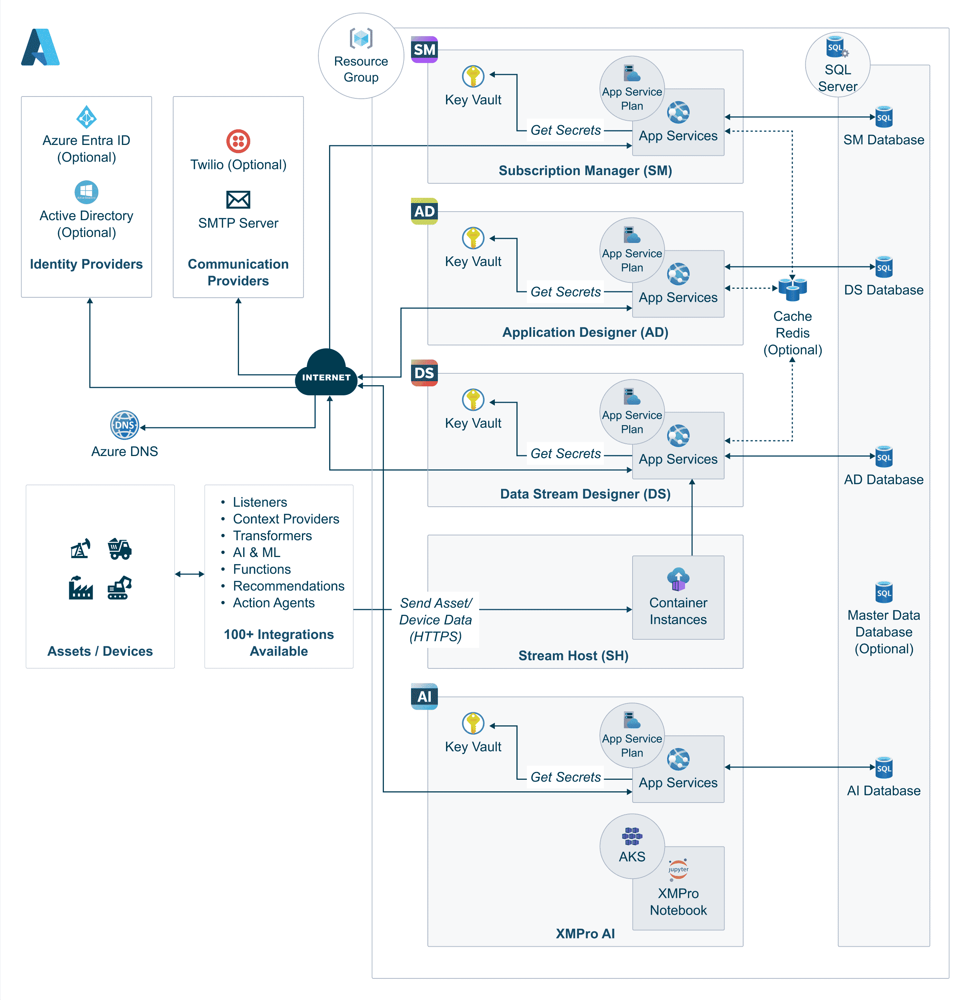

Azure Terraform Deployment
Overview
Deploy XMPro on Azure using our production-ready Terraform module. This documentation provides implementation guidance, while technical specifications are maintained in the module's GitHub repository.
Note
For v4.4 and earlier, use the ARM template deployment. This Terraform module is for XMPro v4.5 and later.
What Gets Deployed
The Terraform module creates a complete XMPro platform with:
- Core Applications: SM, AD, DS, and optionally AI services
- Azure Infrastructure: SQL databases, App Services, Key Vault, Storage
- Security: Managed identities, SSL certificates, network security
- Monitoring: Application Insights and Log Analytics
For detailed architecture and component descriptions, see the Architecture Overview in the GitHub README.
Quick Start
- Prerequisites - Set up your environment
- Implementation Guide - Deploy XMPro
- Module Documentation - Technical reference
Key Features
- Production-Ready Defaults: Optimized configurations for immediate use
- Flexible Deployment Options: Support for evaluation and production modes
- Existing Database Support: Integrate with your current SQL infrastructure
- Custom Domain Management: Automatic SSL certificates via Azure
- Comprehensive Monitoring: Built-in Application Insights and logging
Architecture
The Terraform module deploys a complete XMPro platform on Azure:

For detailed component descriptions, resource dependencies, and technical specifications, see the Architecture Overview and Submodules sections in the GitHub README.
Post-Deployment Steps
Stream Host Installation
The module includes one Stream Host container for testing. For production data collection, install additional Stream Hosts near your data sources:
Optional Components
The module supports additional components that can be configured based on your requirements. For details on currently available optional components like custom domains and email notifications, see the module's Configuration Reference.
Future optional components (requiring manual configuration):
- Redis Cache: For performance optimization and caching
- Master Data: For centralized reference data management
- Twilio Integration: For SMS and voice notifications
Advanced Configuration
The module supports extensive configuration options for production deployments. For details on:
- Master Data: See the GitHub README
- Stream Host Configuration: See Stream Host Configuration
- DNS and Custom Domains: See DNS and Domain Configuration
- Email Notifications: See Email Configuration
- Additional Components: Configured based on your specific requirements
Sizing Recommendations
For production deployment sizing recommendations based on real-world usage patterns, see the Sizing Recommendations section in the GitHub README.
Important
The Terraform module defaults to conservative B1 App Service Plans. Production deployments should use P1v3 minimum as documented in the sizing guide.
Available Environments
Non-Production Environment
Pre-configured for testing and staging:
# Key configuration
environment = "nonprod"
# Separate App Service Plans for each product
# Development/Small Production Example:
sm_service_plan_sku = "B1" # Basic tier for development
ad_service_plan_sku = "B1" # Basic tier for development
ds_service_plan_sku = "B1" # Basic tier for development
sh_service_plan_sku = "B1" # Basic tier for development
sql_sku_name = "S0"
enable_backup = false
Location: deploy/terraform-v5/environments/dev/
Production Environment
Production environment for live workloads:
# Key configuration
environment = "prod"
# Separate App Service Plans with production workload sizing based on real usage
sm_service_plan_sku = "P2v3" # Small production minimum
ad_service_plan_sku = "P3v3" # Handles complex dashboards and real-time updates
ds_service_plan_sku = "P2v3" # Small production minimum
sh_service_plan_sku = "P3v3" # Memory-intensive stream processing
# Use vCore-based database pricing for better performance predictability
databases = {
SM = { sku_name = "GP_Gen5_4" } # 4 vCPU, 20.8GB RAM
AD = { sku_name = "GP_Gen5_4" }
DS = { sku_name = "GP_Gen5_4" }
}
enable_backup = true
enable_custom_domain = false # Set to true if using custom domain (requires dns_zone_name)
Location: deploy/terraform-v5/environments/qa/
Sandbox Environment
Full-featured environment for demonstrations:
# Key configuration
environment = "sandbox"
enable_stream_host = true # Enabled for full demo capabilities
Location: deploy/terraform-v5/environments/sandbox-sm-only/ (note: full sandbox not available)
SM-Only Environment
Minimal deployment with only Subscription Manager:
# Key configuration
enable_ad = false
enable_ds = false
enable_stream_host = false
Location: deploy/terraform-v5/environments/sandbox-sm-only/
Single Product Deployments
For customers who already have XMPro Subscription Manager (SM) deployed and want to add individual products like App Designer (AD) or Data Stream Designer (DS), the module supports partial deployment configurations. This is useful for:
- Adding AD to an existing SM installation
- Adding DS to an existing SM installation
- Scaling deployments by adding products incrementally
- Integrating with existing XMPro installations
Prerequisites for Single Product Deployments
Before deploying individual products, ensure you have:
Existing SM Installation Details:
- SM application URL (e.g.,
https://sm.yourcompany.com) - SM database connection details
- Valid admin credentials for the existing SM
- SM application URL (e.g.,
Network Connectivity:
- Products must be able to communicate with existing SM
- Ensure firewall rules allow communication between services
- Consider Azure Virtual Network peering if using different VNets
Compatible Versions:
- Ensure the product version matches or is compatible with existing SM
- Check version compatibility in the release notes
AD-Only Deployment
To deploy only App Designer with an existing SM installation:
# Key configuration for AD-only deployment
enable_ad = true # Deploy App Designer
enable_ds = false # Skip Data Stream Designer
enable_stream_host = false # Skip Stream Host
enable_sm = false # Skip Subscription Manager
# Existing SM connection details
existing_sm_url = "https://your-existing-sm.azurewebsites.net"
existing_sm_database_server = "your-existing-sql-server.database.windows.net"
existing_sm_database_name = "SM"
# AD-specific configuration
ad_service_plan_sku = "P1v3"
ad_cpu = 1
ad_memory = "2Gi"
# Database configuration (reuse existing or create new)
use_existing_database = true # Set to false to create new AD database
existing_sql_server_name = "your-existing-sql-server"
existing_sql_server_resource_group = "your-existing-rg"
existing_database_names = {
AD = "ExistingADDatabase" # Use existing AD database
SM = "ExistingSMDatabase" # Reference to existing SM database
}
Configuration Notes:
- Set
enable_sm = falseto skip SM deployment entirely - Configure
existing_sm_urlto point to your existing SM installation - Use
existing_sm_database_serverandexisting_sm_database_namefor database connectivity - AD will register itself with the existing SM during startup
DS-Only Deployment
To deploy only Data Stream Designer with an existing SM installation:
# Key configuration for DS-only deployment
enable_ad = false # Skip App Designer
enable_ds = true # Deploy Data Stream Designer
enable_stream_host = false # Skip Stream Host (unless needed)
enable_sm = false # Skip Subscription Manager
# Existing SM connection details
existing_sm_url = "https://your-existing-sm.azurewebsites.net"
existing_sm_database_server = "your-existing-sql-server.database.windows.net"
existing_sm_database_name = "SM"
# DS-specific configuration
ds_service_plan_sku = "P1v3"
ds_cpu = 1
ds_memory = "2Gi"
# Optional: Enable Stream Host if needed for DS
# enable_stream_host = true
# sh_service_plan_sku = "P1v3"
# Database configuration
use_existing_database = true
existing_sql_server_name = "your-existing-sql-server"
existing_sql_server_resource_group = "your-existing-rg"
existing_database_names = {
DS = "ExistingDSDatabase" # Use existing DS database
SM = "ExistingSMDatabase" # Reference to existing SM database
}
Configuration Notes:
- DS requires connection to SM for user authentication and licensing
- Consider enabling Stream Host if your DS deployment needs real-time data streaming
- DS will register as a product with the existing SM during startup
Combined AD + DS Deployment (No SM)
To deploy both AD and DS products with an existing SM:
# Deploy both products, skip SM
enable_ad = true
enable_ds = true
enable_stream_host = false # Set to true if you need stream processing
enable_sm = false # Skip SM deployment
# Existing SM connection
existing_sm_url = "https://your-existing-sm.azurewebsites.net"
existing_sm_database_server = "your-existing-sql-server.database.windows.net"
existing_sm_database_name = "SM"
# Product-specific sizing
ad_service_plan_sku = "P2v3" # Higher SKU for combined deployment
ds_service_plan_sku = "P2v3"
sh_service_plan_sku = "P1v3"
# Database configuration
use_existing_database = true
existing_sql_server_name = "your-existing-sql-server"
existing_sql_server_resource_group = "your-existing-rg"
existing_database_names = {
AD = "ExistingADDatabase"
DS = "ExistingDSDatabase"
SM = "ExistingSMDatabase" # Reference to existing SM database
}
Connecting to Existing SM Instance
When deploying products to work with an existing SM, configure the following connection details:
Application Configuration
# SM connection variables
existing_sm_url = "https://sm.yourcompany.com"
existing_sm_database_server = "yourserver.database.windows.net"
existing_sm_database_name = "SM"
# Authentication settings (must match existing SM)
site_admin_password = "same-as-existing-sm"
company_admin_password = "same-as-existing-sm"
masterkey = "same-masterkey-as-existing-sm"
Database Connection Variables
# For connecting to existing SQL Server
existing_sql_server_name = "your-sql-server-name"
existing_sql_server_resource_group = "your-sql-server-rg"
# Database credentials (must have access to existing databases)
db_admin_username = "sqladmin"
db_admin_password = "your-db-password"
Network Configuration
# If deploying in different region/vnet than existing SM
location = "eastus" # Can be different from existing SM
vnet_address_space = "10.1.0.0/16" # Ensure no IP conflicts
# DNS and domain settings (optional)
dns_zone_name = "yourcompany.com"
enable_custom_domain = false # Set to true if you need custom domain names (requires dns_zone_name)
Deployment Example
Complete example for AD-only deployment with existing SM:
# terraform-v5.0-ad-only.tfvars for AD-only deployment
prefix = "xmpro"
environment = "prod"
location = "eastus"
company_name = "yourcompany"
# Product selection - AD only
enable_ad = true
enable_ds = false
enable_sm = false
enable_stream_host = false
# Existing SM connection
existing_sm_url = "https://sm-yourcompany-prod.azurewebsites.net"
existing_sm_database_server = "sql-yourcompany-prod.database.windows.net"
existing_sm_database_name = "SM"
# Container registry
acr_url_product = "xmpro.azurecr.io"
# ACR credentials not needed for public registry
imageversion = "4.5.1"
# Database reuse
use_existing_database = true
existing_sql_server_name = "sql-yourcompany-prod"
existing_sql_server_resource_group = "rg-yourcompany-prod-shared"
existing_database_names = {
AD = "AD"
SM = "SM"
}
# Authentication (must match existing SM)
db_admin_username = "sqladmin"
db_admin_password = "YourExistingDbPassword!"
company_admin_password = "YourExistingAdminPassword!"
site_admin_password = "YourExistingSitePassword!"
masterkey = "YourExistingMasterKey!"
# AD sizing
ad_service_plan_sku = "P2v3"
ad_cpu = 1
ad_memory = "2Gi"
# Optional SMTP (if different from existing SM)
smtp_username = "notifications@yourcompany.com"
smtp_password = "your-smtp-password"
smtp_fromemail = "noreply@yourcompany.com"
smtp_host = "smtp.sendgrid.net"
smtp_port = 587
smtp_enable_ssl = true # Set to false if your SMTP server doesn't require SSL
Post-Deployment Configuration
After deploying individual products:
Verify Product Registration:
# Check that new product appears in existing SM curl -f "${existing_sm_url}/api/products"Update Licenses:
- Login to existing SM as Super Admin
- Navigate to Company → Subscriptions
- Verify new product appears and has valid license
- Request additional licenses if needed
Configure Product Access:
- Assign users to new product in SM
- Configure role-based permissions
- Test product functionality with existing user accounts
Network Verification:
# Test connectivity between products curl -f "$(terraform output -raw ad_url)/health" curl -f "${existing_sm_url}/health" # Verify product can reach SM database az sql db show \ --resource-group ${existing_sql_server_resource_group} \ --server ${existing_sql_server_name} \ --name "SM"
Considerations and Limitations
Security:
- Products deployed separately may need additional security group rules
- Ensure consistent authentication settings across all products
- Consider Azure Key Vault for shared secrets management
Performance:
- Monitor cross-region latency if products are in different Azure regions
- Consider co-locating products with existing SM for optimal performance
- Database connection pooling may need adjustment for multiple products
Maintenance:
- Coordinate upgrades across all products to maintain compatibility
- Test product interactions thoroughly after individual updates
- Maintain consistent backup strategies across all components
Licensing:
- Each product requires valid licenses in the existing SM
- Monitor license usage as you add products
- Consider license implications for multi-region deployments
Deployment Methods
Local Deployment
For non-production and testing environments:
Navigate to environment directory:
cd deploy/terraform-v5/environments/devInitialize Terraform:
terraform initConfigure variables:
# Create version-specific terraform configuration cat > terraform-v5.0.tfvars <<EOF prefix = "xmpro" environment = "nonprod" location = "eastus" company_name = "mycompany" acr_url_product = "xmpro.azurecr.io" # ACR credentials not needed for public registry db_admin_password = "SecurePassword123!" company_admin_password = "AdminPassword123!" site_admin_password = "SitePassword123!" masterkey = "YourMasterKey123!" EOFDeploy infrastructure:
terraform plan -var-file="terraform-v5.0.tfvars" -out=tfplan-v5.0 terraform apply tfplan-v5.0
CI/CD Pipeline Deployment
For automated production deployments:
Pipeline File: /deploy/terraform-v5.0-deploy.yml
Variable Groups:
terraform-nonprod-v5.0: Non-production environment secretsterraform-prod-v5.0: Production environment secrets
Deployment Flow:
- Version generation
- Terraform validation
- Environment deployment (nonprod → prod)
Configuration Options
Basic Configuration
# Core settings
prefix = "xmpro"
environment = "nonprod"
location = "eastus"
company_name = "mycompany"
# Container registry
acr_url_product = "xmpro.azurecr.io"
acr_username = "registry-username"
acr_password = "registry-password"
# Image version (optional)
imageversion = "4.5.1"
Feature Toggles and Optional Components
# Stream Host Configuration (Always deployed, but customizable)
stream_host_cpu = 2.0 # Recommended for production (default: 1.0)
stream_host_memory = 8.0 # Recommended for production (default: 4.0)
# Advanced Stream Host environment variables
stream_host_environment_variables = {
"ADDITIONAL_INSTALLS" = "build-base gcc g++ python3-dev"
"SH_PIP_MODULES" = "pandas numpy scikit-learn matplotlib"
"PIP_REQUIREMENTS_PATH" = "/app/requirements"
}
# DNS Zone (Optional)
enable_custom_domain = true # Enables custom domain support
dns_zone_name = "xmpro.company.com" # Required when enable_custom_domain is true
use_existing_dns_zone = false # Set to true to use existing DNS zone
# Backup Configuration (if available in your Terraform version)
enable_backup = true
backup_retention_days = 30
# Future optional components (not included in standard deployment)
# These require manual configuration or custom Terraform modules:
# - Redis Cache for performance optimization
# - Master Data for centralized reference data
# - Twilio for SMS/voice notifications
# - Elasticsearch for advanced analytics
# - Apache Kafka for event streaming
SMTP Configuration
# Email settings
smtp_username = "notifications@yourdomain.com"
smtp_password = "smtp-password"
smtp_fromemail = "noreply@yourdomain.com"
smtp_host = "smtp.sendgrid.net"
smtp_port = 587
smtp_enable_ssl = true # Set to false if your SMTP server doesn't require SSL
Quick Start
The fastest way to deploy XMPro on Azure:
Set up authentication:
az login az account set --subscription "Your Subscription"Set environment variables:
export ARM_CLIENT_ID="your-client-id" export ARM_CLIENT_SECRET="your-client-secret" export ARM_SUBSCRIPTION_ID="your-subscription-id" export ARM_TENANT_ID="your-tenant-id" # ACR credentials not needed - xmpro.azurecr.io is publicCreate your deployment directory:
mkdir xmpro-deployment cd xmpro-deploymentCreate main.tf file:
cat > main.tf <<'EOF' module "xmpro_platform" { source = "github.com/XMPro/terraform-xmpro-azure?ref=v4.5.1" # Core configuration environment = "dev" location = "East US" company_name = "mycompany" # Database credentials db_admin_password = "MySecureDbPassword123!" company_admin_password = "MyCompanyAdminPassword123!" site_admin_password = "MySiteAdminPassword123!" # Container registry (public) acr_url_product = "xmpro.azurecr.io" imageversion = "4.5.1" # App Service Plans (adjust for your environment) sm_service_plan_sku = "P1v3" # Production recommended ad_service_plan_sku = "P1v3" ds_service_plan_sku = "P1v3" } EOFDeploy:
terraform init terraform plan -out=tfplan terraform apply tfplanGet deployment outputs:
terraform output -json > deployment-info.json
Post-Deployment
Initial Access
After deployment, retrieve your application URLs and credentials:
# Application URLs
echo "App Designer: $(terraform output -raw ad_url)"
echo "Data Stream Designer: $(terraform output -raw ds_url)"
echo "Subscription Manager: $(terraform output -raw sm_url)"
# Admin credentials
echo "Admin Email: $(terraform output -raw company_admin_email)"
echo "Admin Password: $(terraform output -raw company_admin_password)"
Service Verification
# Check service health
curl -f "$(terraform output -raw ad_url)/health"
curl -f "$(terraform output -raw ds_url)/health"
curl -f "$(terraform output -raw sm_url)/health"
# Verify database connectivity
az sql db show \
--resource-group $(terraform output -raw resource_group_name) \
--server $(terraform output -raw sql_server_name) \
--name "AD"
Initial Configuration
- Navigate to Subscription Manager URL
- Login with admin credentials
- Configure company settings
- Set up additional users and roles
- Configure license keys
Restarting App Services
After deployment, you may need to restart your app services in the Azure Portal:
- Navigate to "Resource groups" in the Azure Portal
- Select your resource group (e.g.,
rg-{company_name}-{environment}-xmpro) - Select the App Services (SM, AD, DS)
- Click "Restart" for each service
Note
App Services may need to be restarted after initial deployment to ensure all configurations are properly loaded.
Admin Logins
After deployment, you can access the platform with these accounts:
| User | Type | Password |
|---|---|---|
| admin@xmpro.onxmpro.com | Super Admin | Value from site_admin_password variable |
| {firstname}.{lastname}@{company_name}.onxmpro.com | Company Admin | Value from company_admin_password variable |
Warning
The username format is critical: firstname.lastname@company_name.onxmpro.com
License Management
Evaluation Mode
When is_evaluation_mode = true, the deployment includes:
- Automatic license provisioning via licenses container
- Pre-configured evaluation product IDs and keys
- No manual license requests required
Production Mode (Default)
When is_evaluation_mode = false (default), you need to manually request licenses:
- Login using the Super Admin account
admin@xmpro.onxmpro.com - Navigate to Company → Subscriptions
- Click "Update License" for each product (AD, DS)
- Generate license requests and submit to XMPro support
- Upload received licenses
Note
License requests require SMTP configuration to be enabled during deployment.
Upgrade
To upgrade an existing XMPro Terraform deployment:
Warning
Before upgrading, back up your databases using Azure SQL Database export functionality.
Update your Terraform configuration:
cd deploy/terraform-v5/environments/{your-environment} # Update the imageversion variable to the new version terraform plan -var imageversion="new-version-tag" terraform applyRestart App Services after upgrade completion
Verify the upgrade:
# Check application URLs terraform output -json # Verify service health curl -f "$(terraform output -raw ad_url)/health" curl -f "$(terraform output -raw ds_url)/health" curl -f "$(terraform output -raw sm_url)/health"
Uninstall
To completely remove the XMPro platform:
Destroy Terraform resources:
cd deploy/terraform-v5/environments/{your-environment} terraform destroyManual cleanup (if needed):
- Remove the resource group from Azure Portal
- Remove Terraform state files (if using local state)
Warning
This will permanently delete all data. Ensure you have backups before proceeding.
Next Steps
- Prerequisites and Setup - Detailed setup instructions
- Implementation Guide - Step-by-step deployment process
- Cost Estimation - Azure Pricing Calculator links for different deployment sizes
- Troubleshooting - Common issues and solutions
Support
For deployment issues:
- Check the Troubleshooting Guide
- Review Azure DevOps pipeline logs
- Use Application Insights for debugging
- Contact XMPro support with deployment details
Last modified: July 29, 2025